Ilustrace
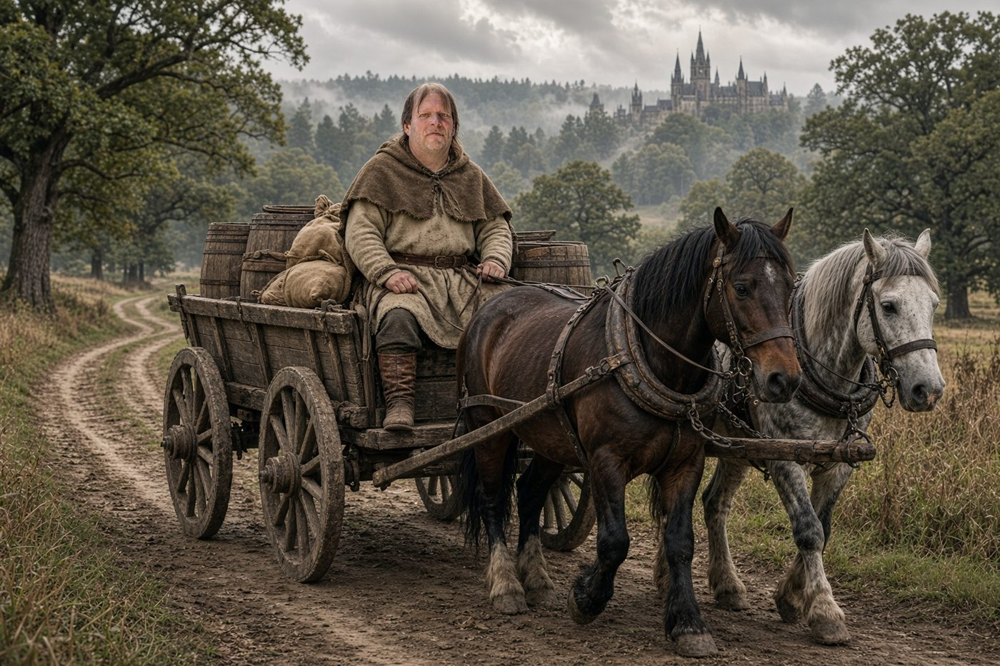
Forman Robert Novák, Lenčin tátaKapitola II – Vázička z Kdyně
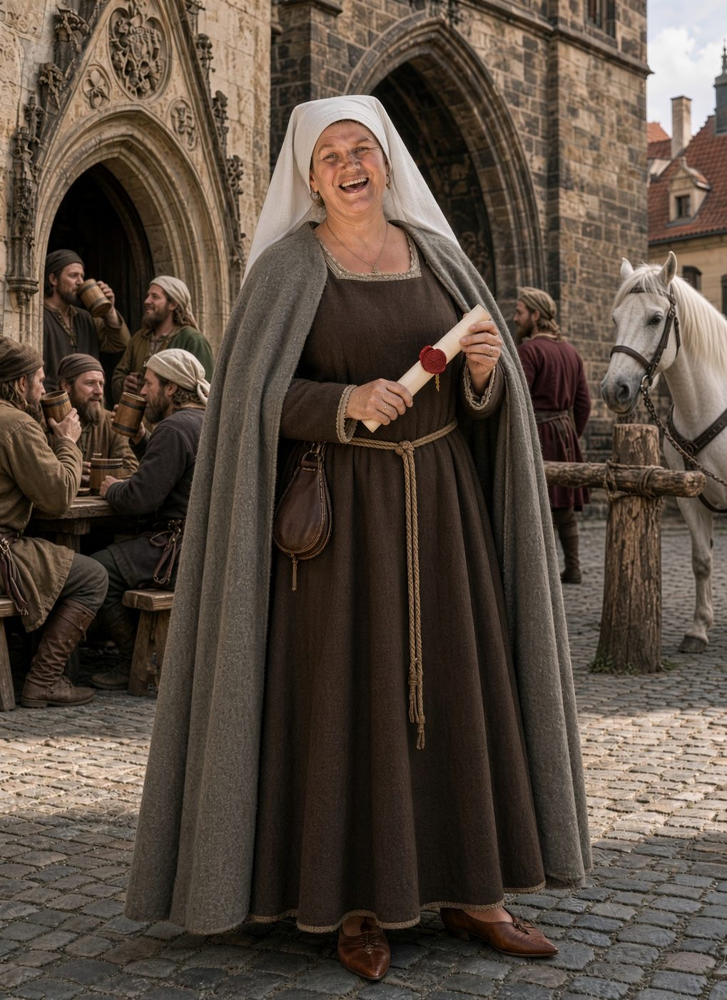
Petra, Lenčina máma, nese novinkyKapitola II – Vázička z Kdyně
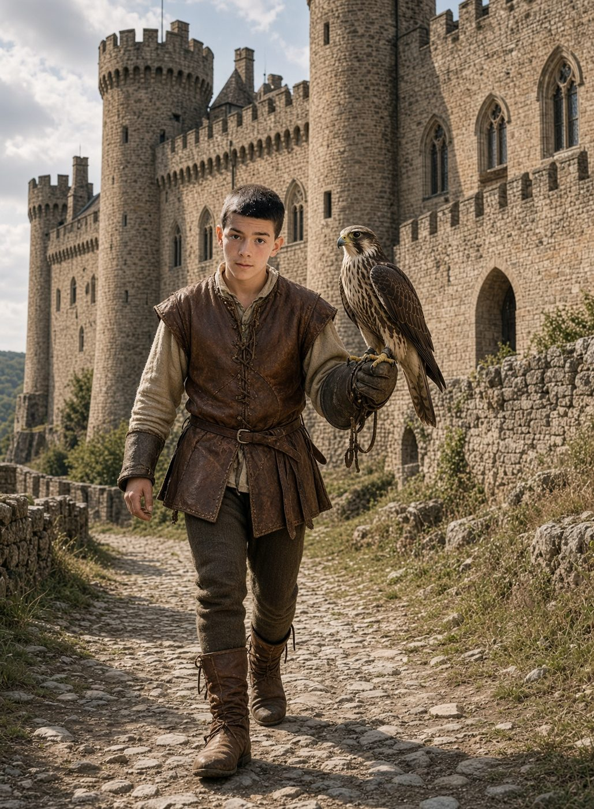
Tobiáš se sokolem Šípem pod KřivoklátemKapitola VII – Zrádci z Křivoklátu
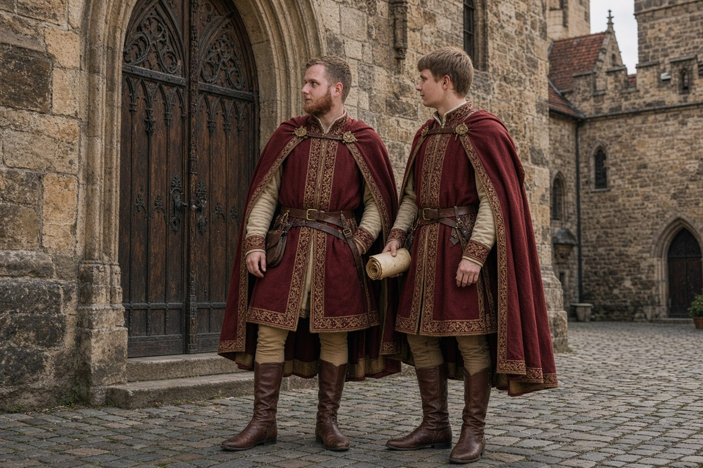
Věční zbrojnoši David a PatrikKapitola XIV – Věční zbrojnoši
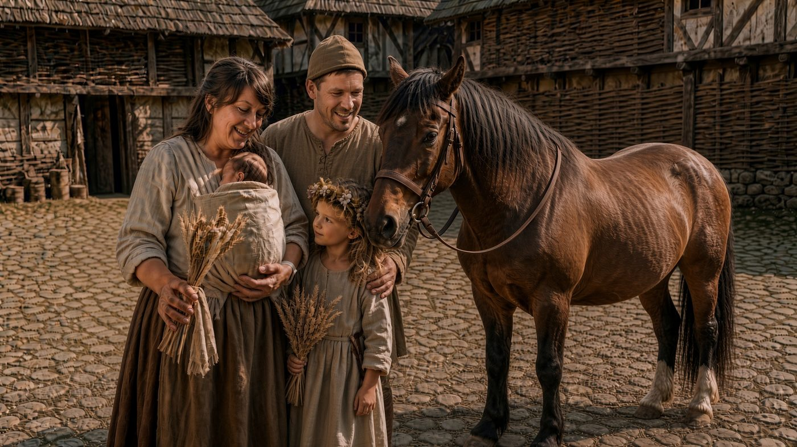
Podkoní Michal s Terezou, Malvínou a KlaudiíKapitola XXII – Hromnice na jezeře Laka
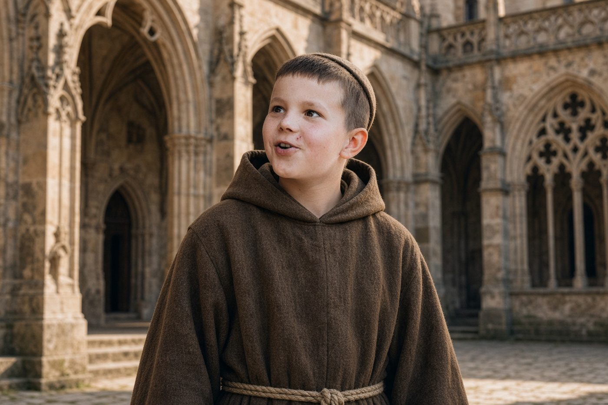
Jáchymek, který slyšel všechnoKapitola IX – Svatý Jan pod Skalou
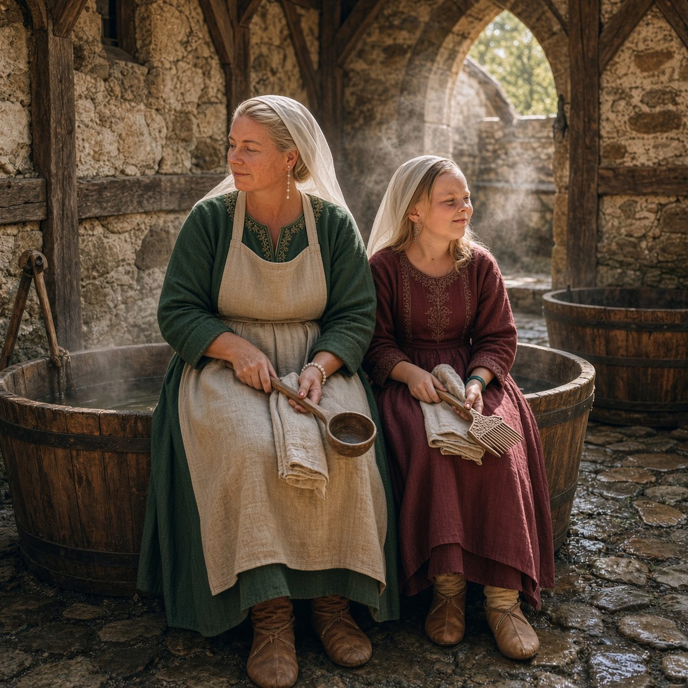
Anička, konšelka a lazebnice z Nupak, s dcerou EmičkouKapitola XX – Sud s kladívkem
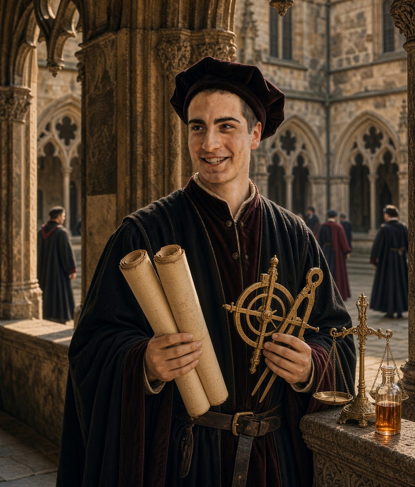
Michal, učenec z kamenické hutiKapitola XVI – Dva zlaté oblouky
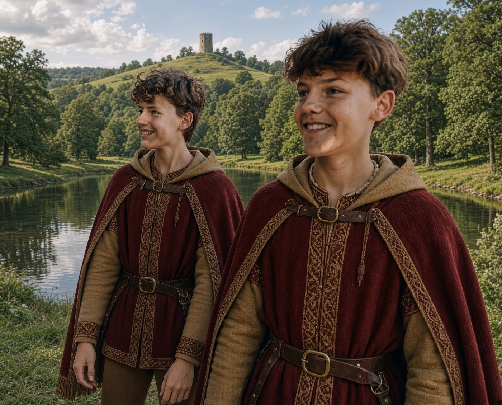
Dvojčata Matěj a JáchymKapitola VIII – Drak z Kouta
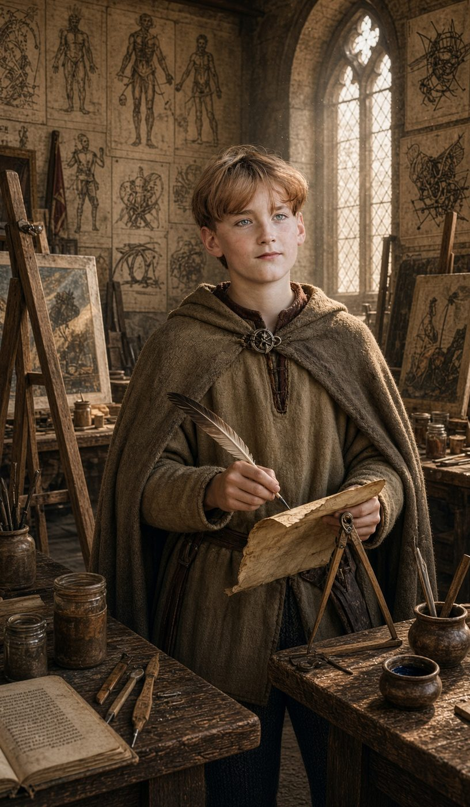
Nikola, malíř hodných démonůKapitola VIII – Drak z Kouta
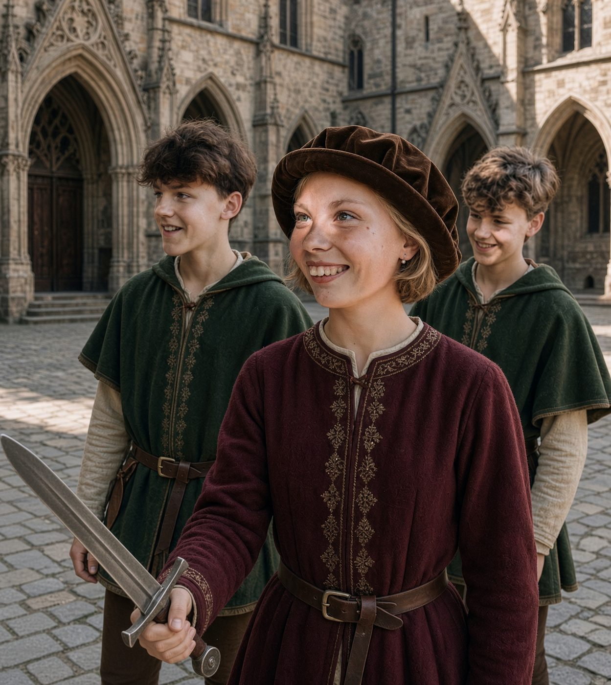
Matěj, Velkej Jáchym a páže Eda cestou do PařížeKapitola XXIII – Slečna Lisa ještě není
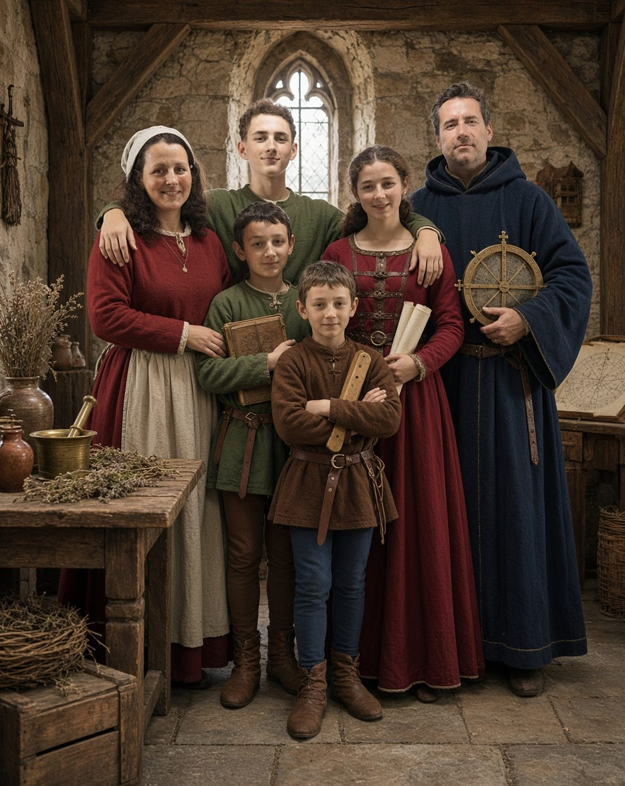
Apatykářka Jana a věštec Petr z rodu Kunců s dětmiKapitola XXI – Sovy vědí kam
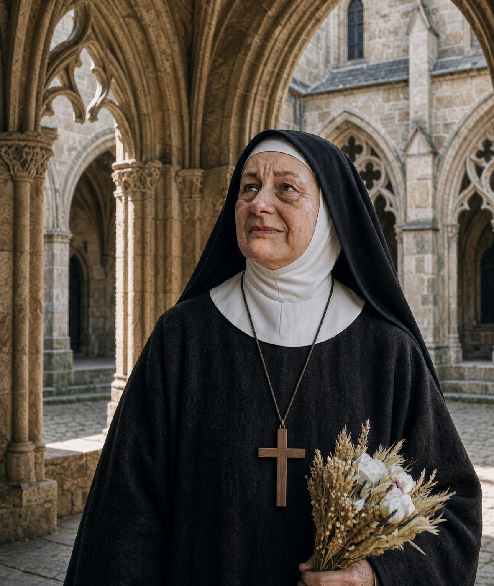
Babička Hanka v řeholním šatuKapitola XX – Sud s kladívkem